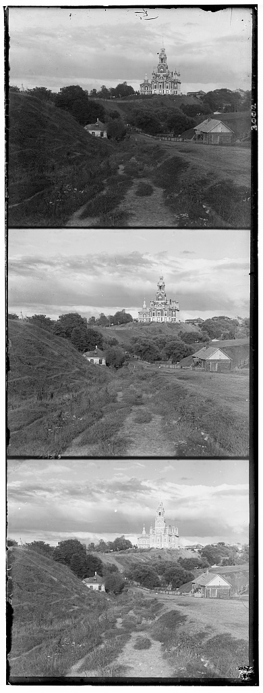
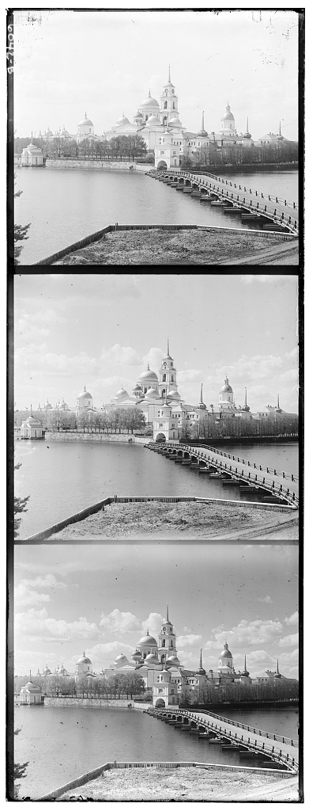

Project Description
The goal of this project was to reconstruct color photographs from digitized RGB glass plate negatives taken by Sergei Mikhailovich Prokudin-Gorskii. Each glass plate contains three vertical grayscale exposures captured through blue, green, and red filters (in BGR order from top to bottom). By extracting these channel plates, determining the optimal spatial displacement offsets, and stacking them together, we automatically produce high-quality color images capturing early 20th-century Russia.
Single-Scale Implementation (JPEG)
The single-scale alignment implementation uses an exhaustive displacement search over a [-15, 15] pixel window in both $x$ and $y$ directions. Alignment performance is computed using Normalized Cross-Correlation (NCC) over interior pixels (cropping a 15% outer border) to eliminate border frame noise and scanning artifacts. Both Green and Red channels are aligned relative to the fixed Blue channel.

Cathedral
Red Offset (dx, dy): (3, 12)

Monastery
Red Offset (dx, dy): (2, 3)

Tobolsk
Red Offset (dx, dy): (3, 6)
Multi-Scale Pyramid Alignment (TIFF)
For high-resolution TIFF images, exhaustive searching is computationally prohibitively expensive. A recursive image pyramid downsamples images by factors of two, estimating coarse displacements at lower resolutions before refining offsets sequentially at higher resolutions.
Bells & Whistles
Exploration of automated features including Sobel edge detection alignment, automatic contrast scaling, white balance adjustment, and edge border cropping.